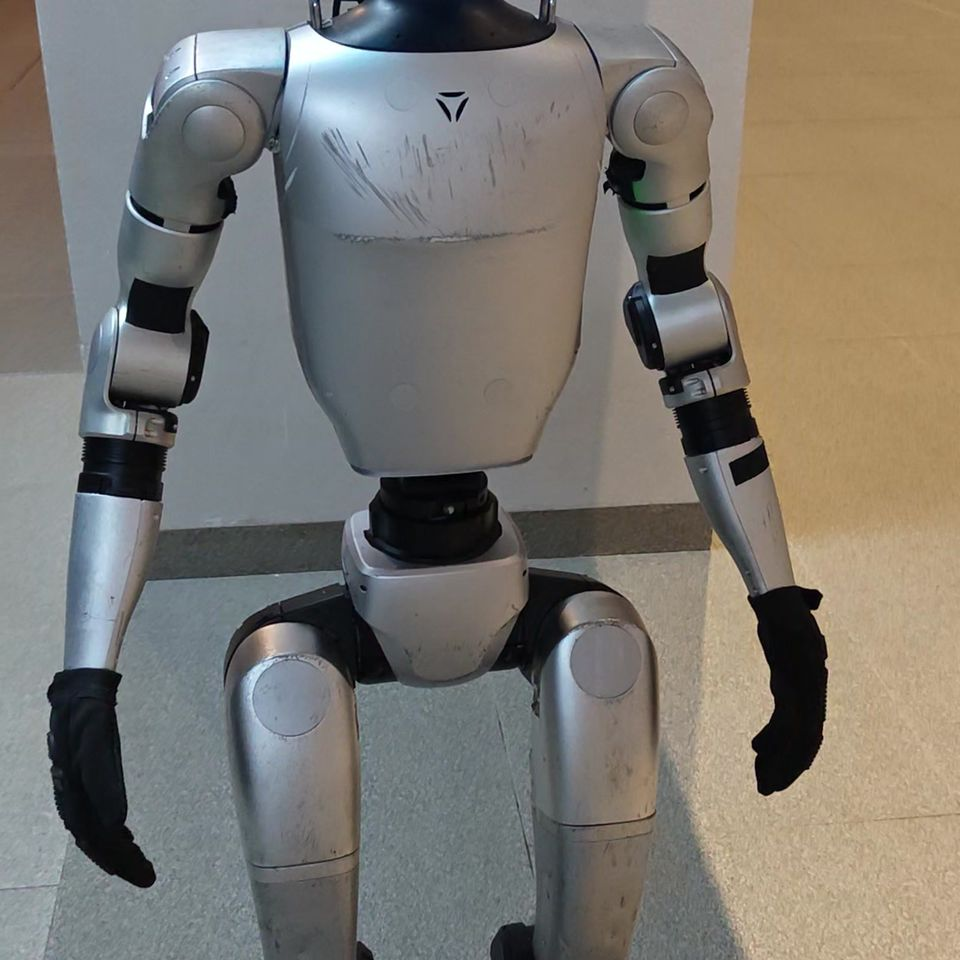
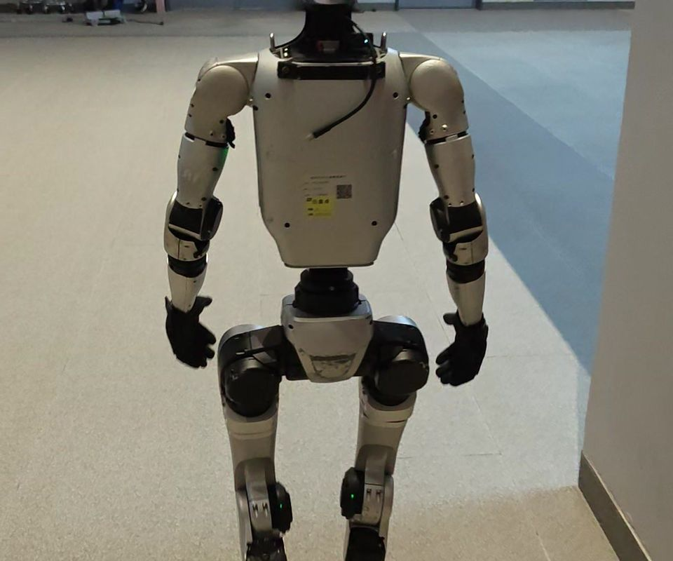
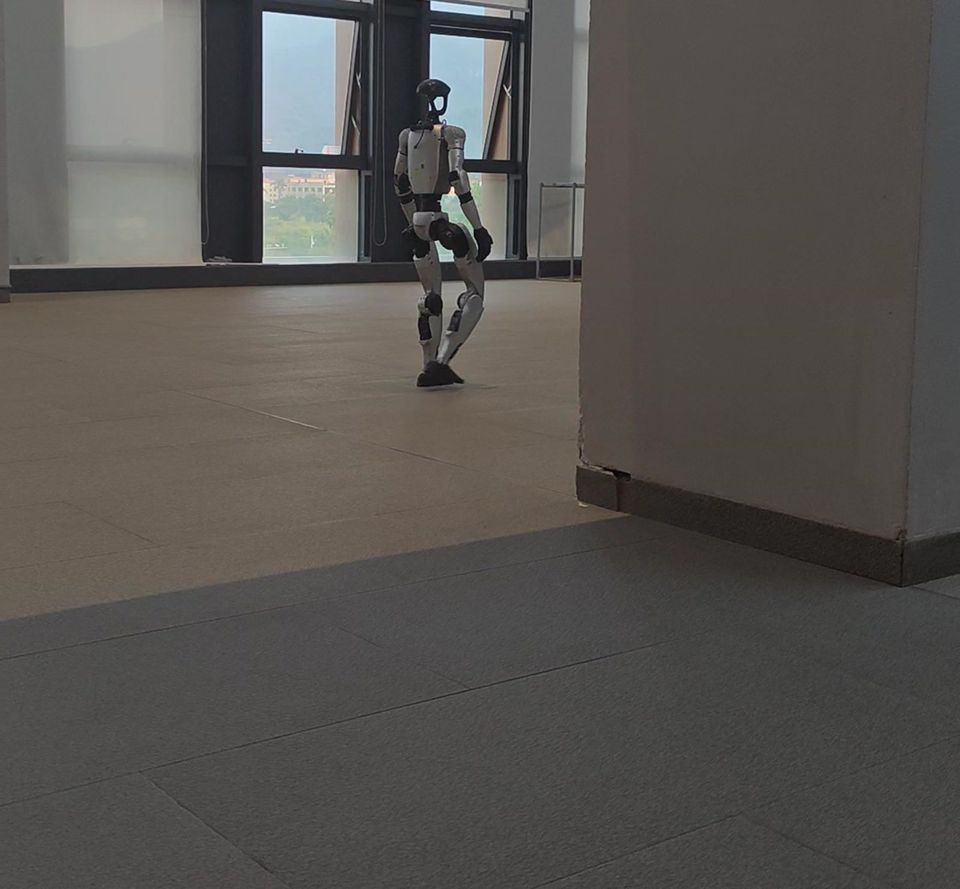

一套命令，
多台一起动
群控不是同时按播放。每条命令是一串手柄按键，带触发时间、持续时间与活动空间；队列定顺序，同步间隔定对齐。

2.0s
同步模式默认间隔。调对了，多台动作才不散队。
- 查尔斯顿舞
- 截拳道
- 扭扭舞
- 功夫
- 机械舞
- 格斗
红色的那个按钮是紧急保护模式。不论队列走到哪，一键停下——现场演练时先教这一个。
一台手机就能下发：手机端跑的是同一张命令表，勾选机器、选队列、点执行。现场没有电脑也能改。
按一下试试：先按一个肩键，再按一个字母键
R1 + B
舞蹈模式
凑不出来的组合，说明这条命令不在表里。
命令表里现在有的（U2 专属的只有 U2 会做）
- 舞蹈模式R1 + B持续 3.0 秒原地
- 查尔斯顿舞 1R1 + ↑持续 0.5 秒→ 1 米
- 查尔斯顿舞 2R1 + ←持续 0.5 秒↑ 1 米，← 1 米
- 查尔斯顿舞 3R1 + →持续 0.5 秒→ 3 米
- 截拳道R2 + ↑持续 0.5 秒3 米见方
- 扭扭舞R2 + ←持续 0.5 秒3 米见方
- 功夫R1 + Select持续 0.5 秒↑ 5 米，仅 U2
- 机械舞 3R1 + ↓持续 0.5 秒3 米见方，仅 U2
- 格斗R2 + ↓持续 0.5 秒↑ 5 米，仅 U2
- 机械舞 1L1 + X持续 0.5 秒← 2 米，→ 2 米，仅 U2
- 机械舞 4L1 + Y持续 0.5 秒↑ 6 米，→ 3 米，仅 U2
我们卖的不是机器人
硬件是宇树的。让它在你场地上真的跑起来，是下面四件事。
-
先去场地走一遍。
地面、光线、网络、人流、充电位，哪一项都能决定它跑不跑得通。勘察完才谈方案。
-
再让机器人建图。
建图用本体雷达，不依赖外网；边走边出图，走偏了当场能看见，走歪的墙线事后能修掉。
-
路线在真地图上排。
站点顺序、每站朝向、每站讲什么，都在场馆自己的后台改；保存后下一次带路就是新内容。
-
真机跑通，再交接。
到站、讲解、被客人打断、回到路线。教两个人：开机、改方案、急停。
交接时交到你手上的：地图文件与站点标注 · 讲解词与导览方案 · 后台账号与操作手册 · 两个人各一次上手培训。
跑出来的数
- 台导览设备
- 7
- 个客户
- 3
- 套群控
- 3
- 米直线，3 个站点
- 24
上面每一个数字都来自已经跑起来的现场，不是估算。
两天，
教会你们自己的老师
不是听讲式科普。两天 12 学时，约 75% 在真机上：20 到 24 人分 4 组轮换，G1 EDU 两台（23 与 29 自由度各一）、GO2 EDU 两台。

2 台 G1 加 2 台 GO2，4 组轮换，一台一台真机上手。顺序不颠倒：先用 GO2 建立手感，再上人形，先过安全规程。
课程结束时能现场验收的七件事
- 跑通 SDK 与 DDS 通信
- 调用高层接口，让 GO2 走方形回原点
- 从机器人状态里数出真实关节数
- 在安全规程下完成起身站立与行走
- 让单个关节小幅受控摆动
- 同一套代码先仿真、后真机
- 两人一组完成 GO2 巡航与 G1 迎宾
约一次开班 也可以我们来你们学校，设备我们带。
现场的名字
场地
学院楼 209 实验室
学院楼 210 实验室
学院楼电梯口
深圳某高校
某科技馆展厅
项目
场馆导览 · 7 台
多机群控 · 3 套
拉丁舞 · 动作定制
指挥家 · 演出动作
师资培训 · 两天 12 学时
状态
在跑
在跑
调试中
已交付
已开班
你可能想问的
机器人是我买还是你们带？两种都行。你自己买本体，我们做落地，按项目算；也可以连本体一起配齐。具体范围按你的场地定。
场地还没建好，能先做吗？能。先做勘察和建图，等场地成型再定站点。最怕的是装修完才叫我们，那时候点位全得重来。
多久能上线？标准场馆大约两到三周：勘察与建图一周，点位、讲解词和联调一周，现场交接两三天。演出类按出片周期算，通常三到四周。
人多、断网、光线差，还稳吗？建图与定位跑在本体上，不依赖外网；讲解走本地语音服务。断网能继续带路，讲解功能会受限，具体以现场测试为准。这也是我们要先勘察的原因。
以后改讲解词、加站点，我自己能改吗？能。场馆自己的后台改站点、改讲解词，保存后立刻生效，语音下一次读的就是新内容，不用找我们。
群控最多能带几台？一套群控服务带多台，机器人在界面上勾选，队列一次下发。实际台数受现场无线环境限制，勘察时测过再定。
舞蹈能换成我们自己的曲子吗？可以，动作是按按键与时间排的，节拍对得上就能改；对不上要先改编排，这部分按项目算。
培训能到我们学校办吗？能，设备我们带过去。两天的课需要一间能放下两台 G1 行走的场地，走廊也行。
出了问题谁负责，多久到场？交付含三个月维保：远程看日志当天响应，到场时间按距离在合同里约定。设备本身是校方或你自己的资产，损坏责任划分建议写进合同。
你们在哪，能来现场吗？深圳坪山。珠三角当天能到；外省按项目排期，勘察与交接各去一次。

说清你这块地，我给你一份排法
不报价，先算清楚要做什么：几台、几个站点、多久上线、交付含什么。